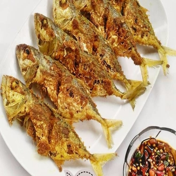

Pilihan Menu Ikan
Ikan Bakar
Ikan bakar adalah hidangan ikan yang dibakar atau dipanggang di atas api atau bara api. Hidangan ikan yang dibakar, muncul secara universal di berbagai belahan dunia

Rating : 9.8/10
Rarga : Rp.30000-55000
Ongkos kirim : Rp.5000
Pilihan pengiriman : gofood, grabfood
Ikan Goreng
Ikan goreng adalah istilah umum yang merujuk pada berbagai jenis hidangan Indonesia dan Malaysia yang dibuat dengan cara menggoreng ikan atau makanan laut lainnya. Ikan goreng sangat terkenal di Indonesia
Rating : 9.3/10
Rarga : Rp.20000-27000
Ongkos kirim : Rp.5000
Pilihan pengiriman : gofood, grabfood
Sop Ikan
Sup ikan biasanya adalah makanan panas yang terbuat dari pencampuran ikan atau makanan laut dengan sayuran dan kaldu, jus, air, atau cairan lainnya
Rating : 8.4/10
Rarga : Rp.26000-45000
Ongkos kirim : Rp.5000
Pilihan pengiriman : gofood, grabfood